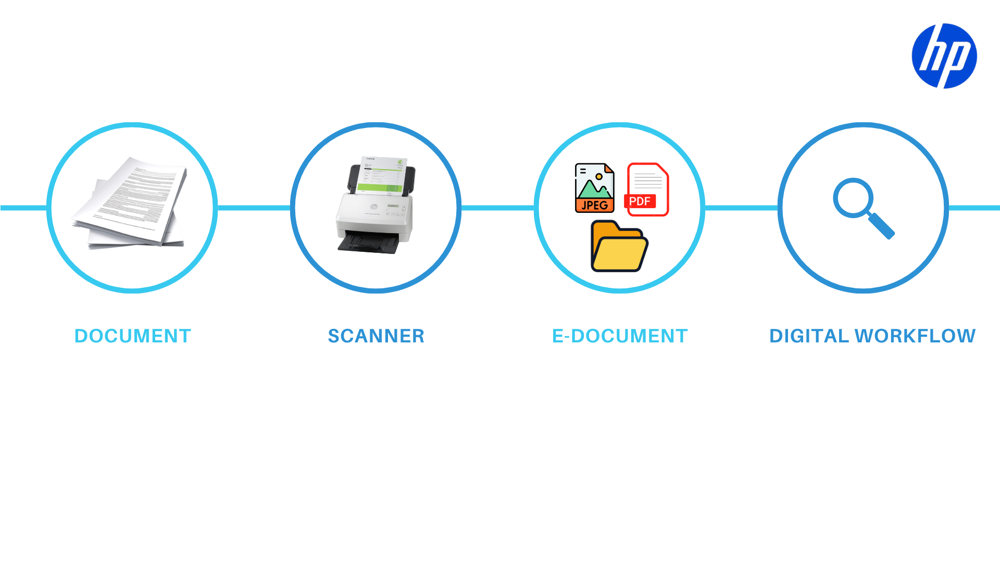

การนำ HP Scanner Solution ไปประยุกต์ใช้ในแต่ละองค์กร
ในปัจจุบัน แต่ละองค์กรต่างมีระบบหลังบ้าน (Backend System) ที่ใช้บริหารจัดการธุรกิจของตัวเองอยู่แล้ว ไม่ว่าจะเป็นระบบ ERP, บัญชี, HIS ของโรงพยาบาล หรือระบบที่พัฒนาขึ้นเอง (In-house) ดังนั้น หน้าที่ของสแกนเนอร์และซอฟต์แวร์โซลูชัน คือการทำหน้าที่เป็น "สะพานเชื่อม" ที่แปลงเอกสารกระดาษให้กลายเป็นข้อมูลดิจิทัล เพื่อนำไปป้อนเข้าสู่ระบบหลังบ้านเหล่านั้นโดยอัตโนมัติ โดยที่พนักงานไม่จำเป็นต้องนั่งคีย์ข้อมูลด้วยมืออีกต่อไป

เปลี่ยนกระดาษให้เป็นข้อมูลดิจิทัล พร้อมส่งเข้าระบบหลังบ้านอัตโนมัติ
ตัวอย่างการนำ HP Scanner Solution ไปใช้งาน
1. การตั้งชื่อไฟล์ด้วย HN Number เพื่อใช้กับระบบหลังบ้านของโรงพยาบาล
ระบบหลังบ้าน: HIS (Hospital Information System) หรือระบบคลังประวัติผู้ป่วยดิจิทัล (EMR)
ขั้นตอนการทำงาน:
หน้าที่ของ HP Scanner & Software
- 1. สแกนและดึงข้อมูล (Scan & OCR) — ใช้ Software HP Scan ในการสแกนเอกสาร เพื่อทำ OCR ดึงข้อมูลค่าของ HN Number
- 2. เปลี่ยนชื่อไฟล์ (Auto-Naming) — นำเลข HN ที่ดึงได้มาตั้งเป็นชื่อไฟล์เอกสารให้ทันที เช่น HN_67-123456.pdf จากนั้นส่งไฟล์นี้ไปยังโฟลเดอร์ที่กำหนดไว้
รูปภาพ
คำอธิบายรูปภาพ
หน้าที่ของระบบหลังบ้าน (HIS)
- 3. ดึงไฟล์เข้าฐานข้อมูล (Auto-Filing) — ระบบ HIS ของโรงพยาบาลจะเข้ามาดึงไฟล์นี้ไป โดยอ่านจากชื่อไฟล์ (HN_67-123456) แล้ววิ่งไปจับคู่เพื่อแนบ (Attach) เอกสารไปยังโปรไฟล์ประวัติของผู้ป่วยคนนั้นๆ ในฐานข้อมูลโดยอัตโนมัติ
- 4. เรียกใช้งานและสืบค้น (Instant Retrieval) — เมื่อแพทย์หรือเจ้าหน้าที่พิมพ์ค้นหาเลข HN ในระบบ HIS เอกสารสแกนก็จะปรากฏขึ้นบนหน้าจอของโรงพยาบาลทันที
รูปภาพ
คำอธิบายรูปภาพ
2. การตั้งชื่อไฟล์ด้วยค่าของ Barcode หรือ QR Code เพื่อใช้กับระบบจัดการเอกสาร
ระบบหลังบ้าน: DMS (Document Management System) หรือระบบจัดการเอกสารองค์กร
ขั้นตอนการทำงาน:
หน้าที่ของ HP Scanner & Software
- 1. สแกนและดึงข้อมูล (Scan & OCR) — ใช้ Software HP Scan ในการสแกนเอกสาร เพื่อทำ OCR ดึงข้อมูลค่าของ QR Code หรือ Barcode
- 2. เปลี่ยนชื่อไฟล์ (Auto-Naming) — นำค่าที่ดึงได้จาก Barcode หรือ QR Code มาตั้งเป็นชื่อไฟล์เอกสารให้ทันที เช่น Invoice_102.pdf จากนั้นส่งไฟล์นี้ไปยังโฟลเดอร์ที่กำหนดไว้
รูปภาพ
คำอธิบายรูปภาพ
หน้าที่ของระบบหลังบ้าน (DMS)
- 3. คัดแยกและจัดหมวดหมู่อัตโนมัติ (Auto-Filing & Categorization) — ระบบ DMS อ่านชื่อไฟล์เพื่อตรวจสอบ จากนั้นคัดแยกและจัดเก็บลงหมวดหมู่หรือโฟลเดอร์ในระบบหลังบ้านให้อัตโนมัติ
- 4. เรียกใช้งานและสืบค้น (Instant Retrieval) — เมื่อพนักงานต้องการเรียกดูเอกสาร สามารถพิมพ์ค้นหาจากชื่อไฟล์ในระบบ DMS เพื่อเปิดไฟล์ขึ้นมาใช้งานได้ทันที
รูปภาพ
คำอธิบายรูปภาพ